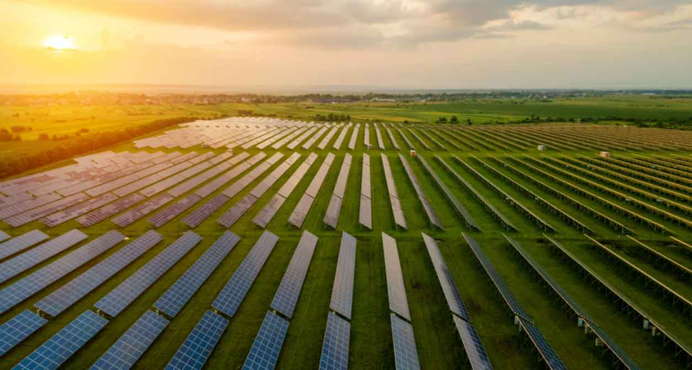

La produzione di energia elettrica da fonti rinnovabili rappresenta oggi uno dei pilastri fondamentali della transizione energetica, poiché consente di ridurre le emissioni di gas serra, limitare l'uso dei combustibili fossili e promuovere uno sviluppo più sostenibile. Tra le diverse fonti rinnovabili (idroelettrica, eolica, biomasse, geotermica), un ruolo di primo piano è occupato dagli impianti fotovoltaici. Gli impianti fotovoltaici trasformano direttamente l'energia solare in energia elettrica attraverso l'effetto fotovoltaico. Gli impianti fotovoltaici possono essere classificati in base alla loro dimensione e utilizzo:

I principali vantaggi degli impianti fotovoltaici sono:
Un impianto fotovoltaico funziona grazie all'effetto fotovoltaico, che avviene nelle celle di silicio di tipo p-n. Quando i fotoni della luce solare colpiscono la cella, forniscono energia agli elettroni, che superano la barriera di potenziale della giunzione generando una differenza di tensione. Collegando più celle in serie e in parallelo si ottengono moduli e stringhe in grado di fornire potenze elevate.
(MPPT - Maximum Power Point Tracking). L'MPPT è fondamentale perché permette all'impianto di lavorare sempre nel punto di massima efficienza anche al variare dell'irraggiamento e della temperatura.